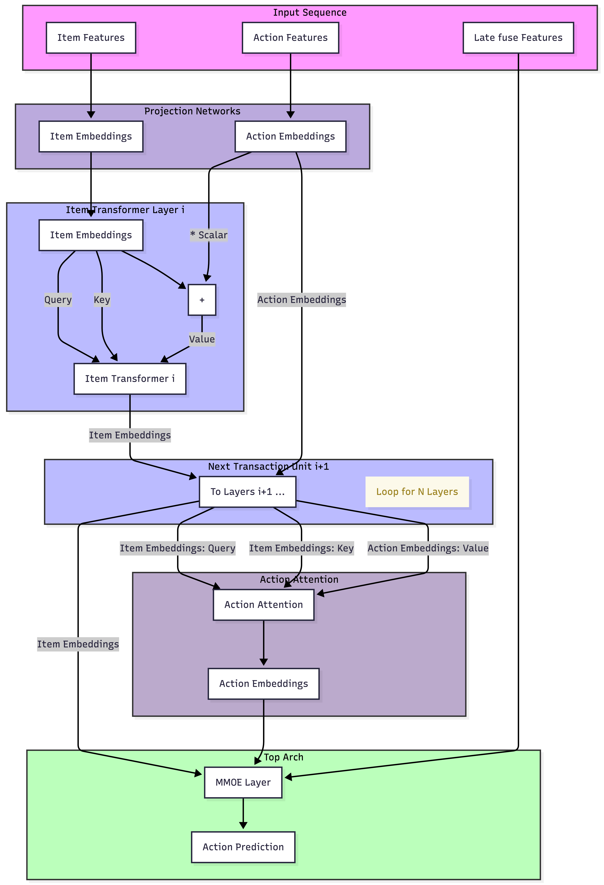
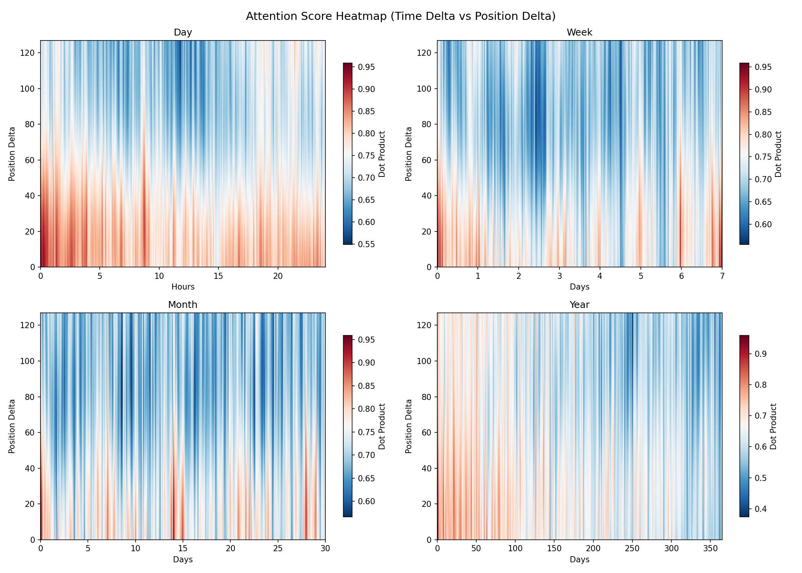

TL;DR
Every Transformer dedicates enormous capacity to learning rich semantic embeddings—yet the rotation manifold acted upon by Rotary Positional Embeddings (RoPE) has always been treated as a fixed, hand-crafted structure populated only by discrete ordinal indices. We argue this rotation space is a largely overlooked second dimension of expressivity in attention.
We introduce SIREN-RoPE, which populates this rotation dimension with heterogeneous temporal signals—continuous timestamps, cyclical daily/weekly patterns, and learned frequency scales—via a dual-branch Sinusoidal Representation Network (SIREN). On a production-scale social feed dataset, SIREN-RoPE consistently improves calibration (NE) and ranking (AUC) across three engagement tasks with ~0.2% extra parameters and negligible computational overhead.
A New Algebraic Analogy
The analogy to complex numbers is instructive: just as introducing the imaginary axis—orthogonal to and independent of the real line—unlocked new algebraic structure once believed impossible, treating the RoPE rotation manifold as a learnable, signal-conditioned space opens an orthogonal degree of freedom in attention.
The Two Dimensions of Attention:
Token embedding → encodes the semantic (real) component — what a token means
Rotation angle → encodes the dynamic (imaginary) component — how it relates to every other token across time, position, and context
In social-feed recommendation, treating ordinal position as a proxy for time is fundamentally misaligned with empirical user behavior. An interaction at 08:00 on a Monday is qualitatively different from one at 22:00 on a Saturday, even when they share the same ordinal displacement |p_i − p_j|. Human behavior is governed by strong periodicities—24-hour diurnal cycles and 7-day weekly rhythms—that ordinal indices cannot capture.
SIREN-RoPE: The Unified Rotation Formula
SIREN-RoPE replaces the fixed RoPE angle p·θ_j with a learned combination of temporal and ordinal signals:
← Temporal (SIREN) ——————— Ordinal (scaled) →
Where f_φ is the dual-branch SIREN network mapping timestamp features to rotation angles, ωsj are learnable per-dimension frequency scalings, and λ is a learnable scalar gate controlling the ordinal contribution (initialized to 1.0).
A striking emergent behavior: without temporal signals, λ remains near 1.0 throughout training. Upon introducing SIREN-RoPE, λ drops to 0.044 at convergence, indicating the model has learned to rely predominantly on temporal modulation—the rotation dimension, once given a rich temporal signal, largely supplants the need for discrete ordinal recency.
Architecture: Dual-Branch SIREN

Figure 1: Base model architecture (AttnMVP). Item and action embeddings are maintained as separate streams. SIREN-RoPE replaces the fixed ordinal rotation angle with a learned combination of temporal and ordinal signals injected directly into the query-key rotation geometry.
The network f_φ additively combines two branches:
- Periodic branch (SIREN): Uses sine activations sin(ω₀·Wx + b) to autonomously discover temporal periodicities beyond the manually specified daily/weekly cycles. Designed to handle unknown harmonics in user behavior.
- Aperiodic branch (DNN): Uses standard ReLU activations to capture monotone trends such as content-recency decay. When the input features are themselves cyclical (cos/sin pairs), this branch retains flexibility to model periodic components as well.
Temporal Input Features
The input to f_φ is a 5-dimensional decomposition of the raw Unix timestamp T:
where τd = 86,400 s (daily) and τw = 604,800 s (weekly). Representing each cycle as a (cos, sin) pair ensures continuity across period boundaries (midnight, end of week) and avoids phase-discontinuity artifacts. Notably, the model need not know the user's timezone to capture morning or evening patterns—the periodicity is recovered automatically from the behavioral sequence.
Experiments
All four models share the identical AttnMVP backbone, feature set, and training procedure (12 Transformer layers, d=512 hidden dimensions, 4 attention heads, sequence length C=1024). The only controlled variable is how—or whether—the item timestamp is used.
| Model | Timestamp in Features | Timestamp in Rotation |
|---|---|---|
| Ordinal RoPE (production baseline) | ✗ | ✗ |
| Timestamp-as-Feature | ✓ | ✗ |
| TO-RoPE | ✗ | time-domain inverse frequencies |
| SIREN-RoPE (ours) | ✗ | dual-branch SIREN |
Main Results
| Model | Contribution NE↓ | Contribution AUC↑ | Like NE↓ | Like AUC↑ | LongDwell NE↓ | LongDwell AUC↑ |
|---|---|---|---|---|---|---|
| Ordinal RoPE | 0.6206 | 0.9102 | 0.5985 | 0.9238 | 0.8362 | 0.7597 |
| Timestamp-as-Feature | 0.6218 | 0.9098 | 0.5997 | 0.9233 | 0.8350 | 0.7603 |
| TO-RoPE | 0.6218 | 0.9095 | 0.5999 | 0.9231 | 0.8349 | 0.7613 |
| SIREN-RoPE (ours) | 0.6182 | 0.9115 | 0.5963 | 0.9249 | 0.8334 | 0.7633 |
What the Baselines Reveal
Routing Timestamp Through Embeddings Doesn't Help
Timestamp-as-Feature—which appends the timestamp to item sequence features while leaving the rotation angle purely ordinal—performs no better than Ordinal RoPE on any metric, and is slightly worse on calibration. This confirms that temporal signals routed through the embedding dimension fail to help and can interfere with content semantics.
Fixed Time Frequencies in Rotation Are Insufficient
TO-RoPE—which applies RoPE-style inverse frequencies to the timestamp rather than ordinal position—only slightly improves over Ordinal RoPE on LongDwell, confirming that a fixed frequency schedule cannot capture the complex multi-scale periodicities that SIREN discovers autonomously.
Key Insight: Temporal signals that fail when injected into the semantic (embedding) dimension consistently succeed when injected into the rotation dimension. The rotation manifold is a qualitatively distinct representation mode—not redundant with but orthogonal to the embedding space.
Ablation Studies
Cyclical Features Improve Calibration
Replacing the scalar time_in_year with the full five-dimensional (cos, sin) decomposition consistently improves NE. The (cos, sin) representation maps each cycle onto a unit circle, eliminating the discontinuous jump that a raw scalar imposes on the network (e.g., 86,399 s jumping back to 0 at midnight).
SIREN Branch: Valuable for Hidden Periodicities
When cyclical features are already provided, DNN-only with full temporal inputs achieves the best NE. We retain the SIREN branch not for the known daily/weekly cycles, but for its capacity to autonomously discover hidden periodicities absent from the manual feature decomposition.
Static Signals Belong in Embeddings, Not Rotation
Replacing the temporal input with a binary in/out-of-network feature (a static social-graph property) performs no better than ordinal RoPE. A static property that does not change across time or position offers no advantage in the dynamic rotation dimension. The rotation dimension is most productive with signals that are inherently relational and dynamic.

Figure 2: Attention heatmap comparing Ordinal RoPE vs. SIREN-RoPE. SIREN-RoPE develops richer temporal attention patterns that reflect daily and weekly behavioral cycles, with attention weights that vary meaningfully with time-of-day and day-of-week context.
Discussion: Rotation as an Expressive Dimension
Our results suggest the rotation manifold is a structured expressive channel rather than a mere positional scaffold. Much like the imaginary axis in algebra, a learnable rotation dimension provides an orthogonal space to encode relationships invisible to the embedding space alone.
The stability of the learnable gate λ demonstrates that ordinal recency and absolute temporal signals are complementary. This framework extends beyond recommendation to general sequence modeling: in NLP, the rotary angle could be conditioned on syntactic depth or part-of-speech tags. Such "content-aware" positional geometry allows the attention mechanism to modulate similarity based on structural or semantic context rather than simple proximity.
Open Invitation: We invite the community to view the rotation space not as a solved positional-encoding detail, but as an untapped axis whose rich structure may prove as consequential for attention as the imaginary unit proved for algebra. Candidates for rotation-dimension conditioning include syntactic structure in NLP, semantic category in vision, and audio frequency bands in speech.